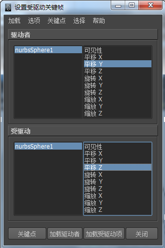

受驱动关键帧创建属性对之间的关联，其中一个（或多个）属性值驱动另一个属性值。请参见受驱动关键帧。
要将属性值与“设置受驱动关键帧”(Set Driven Key)链接，请执行以下操作：
- 选择想要受驱动属性的对象，然后从“动画”(Animation)菜单集中选择“关键帧 > 设置受驱动关键帧 > 设置”(Key > Set Driven Key > Set)。
将显示“设置受驱动关键帧”(Set Driven Key)窗口，其中列出选定对象作为受驱动对象。
- 选择要作为“驱动者”属性的对象，然后在“设置受驱动关键帧”(Set Driven Key)窗口中单击“加载驱动者”(Load Driver)。
注： 受驱动对象和驱动者对象可以是同一对象。

- 从“驱动者”(Driver)列表中选择一个属性，然后从“受驱动”(Driven)列表中选择属性，然后单击“关键帧”(Key)。
这将在选定属性当前值之间创建关联。
- 更改驱动者对象的属性值，然后尽量多次重复上述步骤，从而可以根据您的需要，在属性对之间创建许多不同的关联。（请参见“设置受驱动关键帧”示例。）
提示： 要将对象添加到现有的“驱动者”(Driver)或“受驱动”(Driven)列表中，禁用“设置受驱动关键帧”(Set Driven Key)窗口中的“选项 > 加载时清除”(Options > Clear On Load)，然后单击“加载驱动者”(Load Driver)或“加载受驱动项”(Load Driven)。
链接多个属性
可以使用两个或两个以上驱动者属性来控制单个受驱动属性，或用同一个驱动者驱动两个或两个以上受驱动属性。例如，可以使肌肉在肘关节旋转时凸起，但使其在腕部旋转时凸起更加明显。
该技术类似于将两个属性相链接，以下为限制情况：
- 无法在“设置受驱动关键帧”(Set Driven Key)窗口中同时选择两个驱动者属性。一次只能为一个驱动者属性设置一个关键帧，因此，您需要分别通过关键帧将每个驱动者属性链接到受驱动属性。可以在受驱动对象中选择多个属性，并设定关键帧。
- 将两个或多个对象加载到“驱动者”(Driver)或“受驱动”(Driven)列表中时，不会显示对象的属性。在任一列中单击一个对象可以选择并查看其属性。